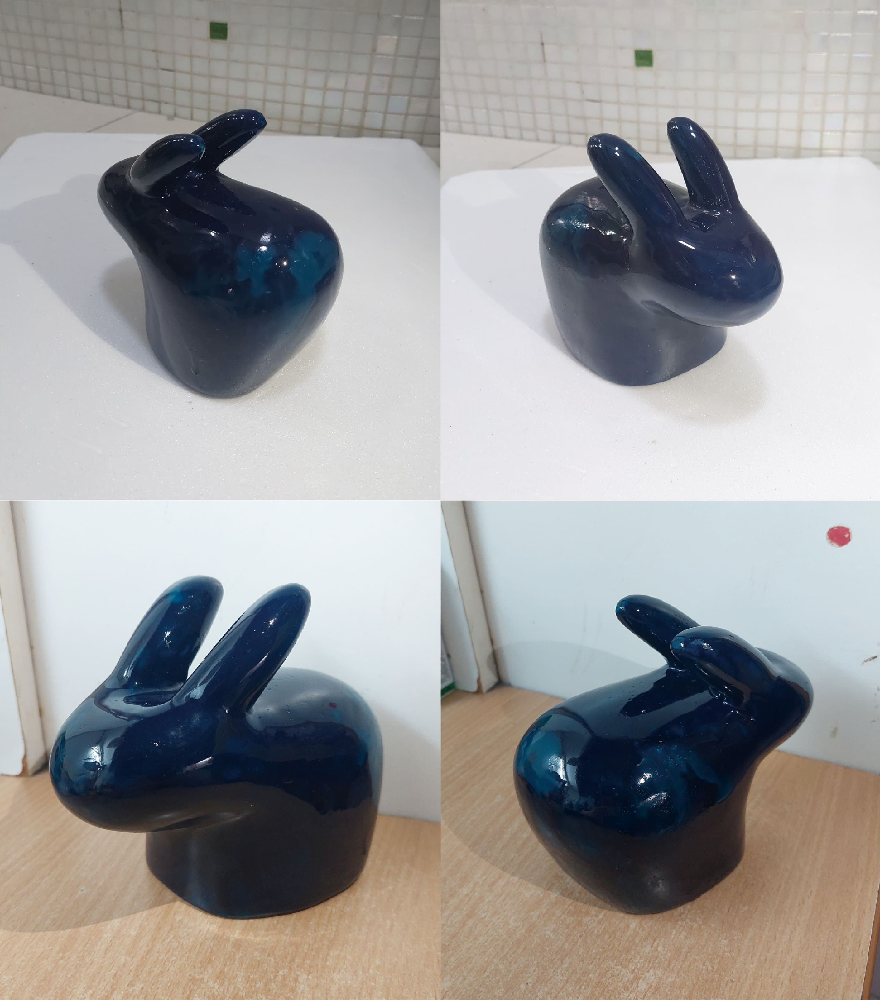

動物簡化｜兔子
立體模型／PU／批土／噴漆
製作與思考
本作品以「兔子」作為造型原型，靈感來自於過去家中飼養兔子的生活經驗。相較於寫實描繪動物外型，我更希望保留記憶中兔子帶來的溫和、安靜與陪伴感，並透過造型的簡化，將情感轉化為更純粹的立體形式。
在設計上，將整體形體收斂為圓潤的主體搭配高度辨識的耳朵輪廓，使造型在簡化後仍能被直覺辨認。製作過程中，耳朵結構因形體細長，在成型與打磨時較難控制比例與曲線，是此次創作中最具挑戰的部分，也讓我在造型取捨與實際製作之間反覆調整。
透過這件作品，我重新理解「簡化」並非只是減少元素，而是在有限的造型語言中，精準保留情感與辨識度，讓物件在安靜的外型中仍能傳達溫度。